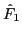
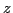
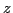
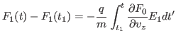

In this section, we consider the self-consistent-field theory of Landau
damping. The Vlasov equation is written
where  is the electron distribution function,
is the electron distribution function,  and are the charge
and mass of electrons, respectively. The linearized version of the above
equation is written
and are the charge
and mass of electrons, respectively. The linearized version of the above
equation is written
We consider the case of
and
. Further
consider only the electrostatic case, i.e.
, i.e., there is not magnetic fluctuation. Then it follows from Faraday's
law that the perturbed electric field can be written as
. Then the linearized Vlasov equation (59) is written
Consider the one-dimensional case where , and are both independent
of  and
and  coordinates, then the above equation is written
coordinates, then the above equation is written
Integrating both sides of Eq. (61) over  and , we obtain
and , we obtain
where
and
which are called the reduced distribution functions. Poisson's equation is
written
where and are the number density and charge of ions, respectively.
In equilibrium the number density of electrons and ions are equal to each
other. Assuming the number density of the massive ions remain unchanged,
Poisson's equation for the perturbed quantities is written
In terms of the reduced distribution function, equation (66) is
written
Equations (62) and (67) governs the time evolution of
 and . Consider the case that
and . Consider the case that  is spatially uniform, then all
the coefficients of Eqs. (62) and (67) are independent of
the spatial coordinate. In this case, different spatial Fourier harmonics are
decoupled. Therefore, we can consider the case that there are only one Fourier
harmonics
is spatially uniform, then all
the coefficients of Eqs. (62) and (67) are independent of
the spatial coordinate. In this case, different spatial Fourier harmonics are
decoupled. Therefore, we can consider the case that there are only one Fourier
harmonics  in both and , i.e., and are
written, respectively, as
in both and , i.e., and are
written, respectively, as
Note that  and  in Eqs (68) and
(69) are usually complex-valued (to allow arbitrary phases angle in
). Then using Eq. (67) in Eq. (62) yields
in Eqs (68) and
(69) are usually complex-valued (to allow arbitrary phases angle in
). Then using Eq. (67) in Eq. (62) yields
 |
(70) |
Given an equilibrium distribution function and an initial
perturbation
, equation (70) can be solved
analytically by using the Laplace transformation. Here, to avoid the fancy
mathematics involved in the Laplace transformation, I solve Eq.
(70) by a direct numerical method.
-- -- tmp

Using
, the above equation is
written
-- -- tmp
yj
2016-01-26